地政学
ウェリントンはクック海峡を見下ろす首都です。北島と南島の連絡、太平洋外交、先住民との条約政治、地震と海上交通のリスクが、港と国会地区に集まります。小さな首都ですが、国家の判断は広い海へ届いています。
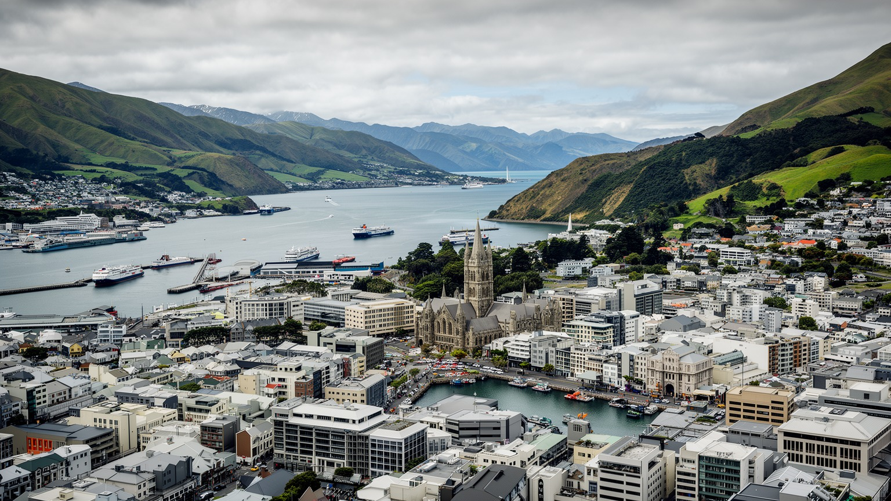
🇳🇿 ニュージーランド / ウェリントン地方 / World City Atlas
クック海峡に開くニュージーランドの首都です。国会、港、映画スタジオ、大学、カフェ、マオリとパケハの政治文化、丘陵住宅、強い風が、狭い入り江の都市生活を形作ります。
都市の骨格
ウェリントンは北島南端の港に沿って、国会、官庁、大学、映画制作、カフェ、住宅地が凝縮する首都です。丘陵と海が近いため、通勤、景観、防災、日々の余暇まで地形の影響を強く受けます。
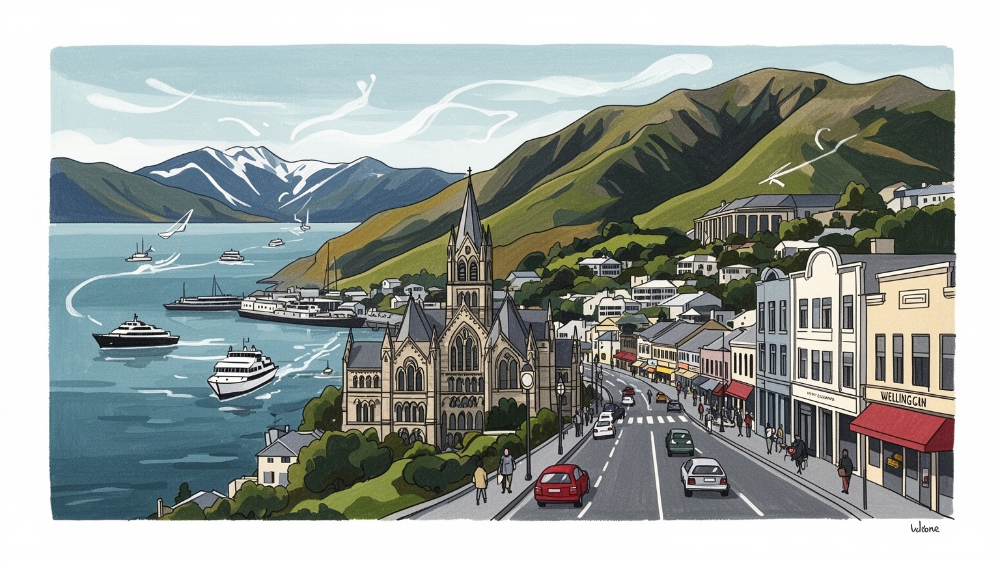
ウェリントンはクック海峡を見下ろす首都です。北島と南島の連絡、太平洋外交、先住民との条約政治、地震と海上交通のリスクが、港と国会地区に集まります。小さな首都ですが、国家の判断は広い海へ届いています。
行政、公共サービス、映画制作、デジタル、大学、港湾、観光、カフェ文化が雇用を支えます。首都の安定した仕事と創造産業の自由さが並ぶ一方、住宅費、交通費、若者の雇用不安も強く見えます。よく働く街です。
マオリのマナ、条約の記憶、英語圏の制度、多様な移民文化、教会、劇場、映画、音楽、博物館が重なります。テ・パパは国家の展示空間であり、街の会話は政治、芸術、食、信仰を近い距離で豊かに結び続けています。
旅行者は港、国会、ケーブルカー、植物園、映画スタジオ、海辺の遊歩道へ向かいます。住民は風、坂、地震、家賃、通勤、カフェ、週末の海辺と付き合いながら、歩ける中心部と丘の住宅地を使い分けます。日常も旅です。
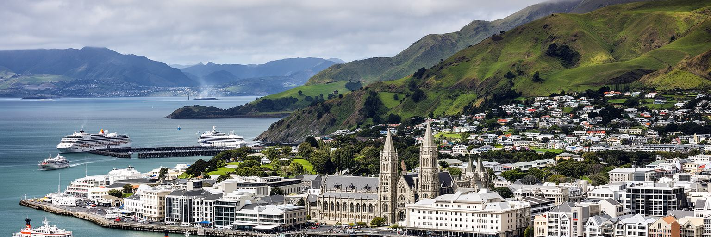
ウェリントンは北島の南端で、細い港とクック海峡に抱かれる首都です。市街地は海岸の埋立地、官庁街、丘陵住宅、大学、港湾、鉄道駅、フェリーターミナルを近い距離に置き、北島と南島を結ぶ交通の結節点として働きます。オークランドのような最大都市ではありませんが、国会、中央省庁、裁判、外交、文化機関が集まることで、国家の意思決定を担っています。海峡の位置は美しい眺望を与える一方で、強風、地震、津波、海上交通の寸断というリスクも持ちます。都市の中心部は歩きやすく、港沿いの公共空間から丘へ上がると、行政都市と住宅都市の距離の近さが分かります。首都機能が狭い入り江に凝縮するため、一つの道路や鉄道路線、港湾施設、フェリー運航が止まると、通勤、物流、観光、政治日程まで影響を受けます。ウェリントンを読むには、規模の小ささではなく、海峡に面した位置が国家の接続と脆さを同時に作ることを見る必要があります。港の水面、国会の芝生、坂の住宅は別々の風景ではなく、一つの地形条件から生まれた都市の層です。だからこそ、景観、交通、防災、公共空間の設計は常に結びついています。さらに、地方から首都へ来る人は、駅から官庁、病院、大学、文化施設へ短時間で移動し、この小ささを便利さとして経験します。その密度が首都らしさを支えています。
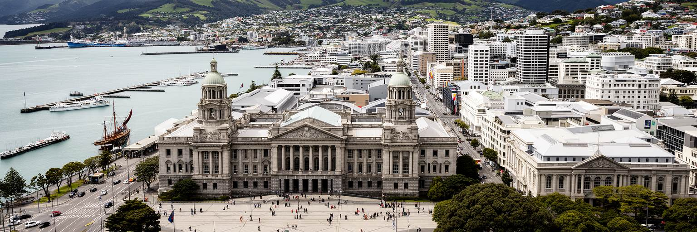
ウェリントンの政治性は、国会議事堂と官庁街だけで完結しません。ニュージーランドではワイタンギ条約をめぐる歴史、マオリの権利、土地、言語、教育、福祉、環境管理が、現代の政策と市民社会の中心にあります。首都には議員、官僚、裁判関係者、メディア、ロビー団体、研究者、抗議活動、地域代表が集まり、政策の言葉が日々の生活へ翻訳されます。国会前の広場は式典の場であり、抗議や追悼の場でもあります。行政の仕事は統計、予算、住宅、交通、保健、移民、気候政策、太平洋諸国との関係まで広く、都市のカフェや大学でも政治の会話が身近です。マオリのマナと王室由来の制度、英連邦型の議会制、移民社会の多様性は、時に緊張しながらも公共の議論を形作ります。ウェリントンが首都として重要なのは、強い権力を誇示することより、条約国家としての約束をどう制度に落とし込むかを問われ続ける点です。政策の正しさは議場の採決だけでなく、住宅の得やすさ、医療へのアクセス、言語の尊重、土地と水の管理、災害時の対応で測られます。小さな中心部に政治機関が集まるため、市民は国家の顔を日常の距離で見ます。請願、委員会、公共相談、報道への反応も速く、政策への不満や期待が広場と画面に表れます。その近さは民主主義の強みであり、説明責任への厳しい視線にもなります。
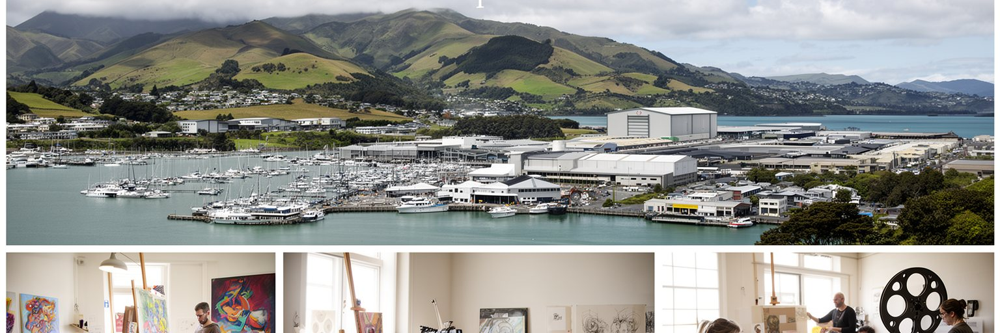
ウェリントンは行政都市であると同時に、映画と創造産業の都市として国際的に知られます。ミラマー周辺の制作スタジオ、特殊効果、衣装、音響、ポストプロダクション、ゲーム、デザイン、アニメーションは、比較的小さな都市に高度な専門労働を集めています。映画産業は観光イメージにも影響し、ファンはロケ地、スタジオ関連施設、港と丘の景観を結びつけて歩きます。ただし創造産業は華やかな表舞台だけではありません。短期契約、国際案件への依存、技能の更新、家賃の高さ、若手の生活費、文化予算の変動が働く人の不安になります。行政と大学が近いことは、政策、研究、技術、人材育成を結びやすくしますが、世界市場で競争する制作現場には常に速度と品質が求められます。街のカフェ、劇場、小さなギャラリー、音楽会場は、映画だけではない創造的な土壌を支えています。ウェリントンを創造都市として読む時は、成功した作品名よりも、専門職の集積、移住してきた若者、夜遅くまで作業する技術者、予算の切れ目を乗り越える小さな会社を見る必要があります。港に面した政治の首都が、想像力を輸出する都市でもあることが、この街の独特の厚みです。制作現場の周囲には、道具を作る職人、衣装を縫う人、配車を担う人、宿泊を支える店もいます。創造産業は画面の外側で、都市の細かな労働を結びます。
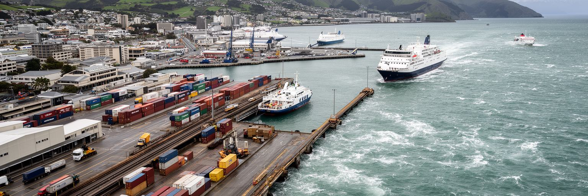
ウェリントン港は、観光の水辺であると同時に、貨物、フェリー、鉄道、道路を結ぶ実務の場所です。クック海峡フェリーは北島と南島をつなぎ、人、車、食品、建材、郵便、観光客を運びます。海が荒れると欠航や遅れが起き、物流と旅程はすぐ影響を受けます。港湾ではコンテナ、燃料、車両、沿岸貨物、クルーズ客、保守作業が重なり、中心部の美しい水辺の背後で、荷役、整備、警備、通関、運転、船員の仕事が動いています。港と鉄道駅が近いことは都市の効率を高めますが、地震や津波に備えた岸壁の強化、老朽施設の更新、交通混雑、騒音、港湾用地と公共空間の調整が必要です。住民にとって港は、週末の散歩や市場の背景であるだけでなく、島国の生活物資を運ぶ基盤です。フェリーターミナルの移転や整備をめぐる議論は、単なる施設計画ではなく、国家の南北連絡をどう守るかという問題です。ウェリントンを港町として見ると、首都機能は議会だけにあるのではなく、海上交通を止めない技術と労働にも支えられていることが分かります。水辺の余暇と港湾の働きは、同じ入り江で互いに場所を分け合っています。大型車の導線、歩行者の安全、港の保安、観光客の案内は、都市の印象と物流効率を同時に左右します。港は見せる場所であり、働く場所でもあります。朝の入港予定や天候判断は、店の仕入れや家族旅行の計画にも小さく響きます。
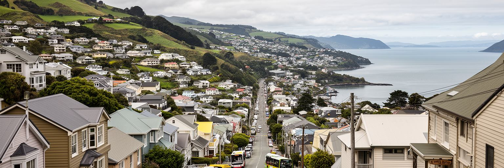
ウェリントンの日常は、港沿いの中心部と周囲の急な丘陵住宅地の往復で成り立ちます。海に近い限られた平地へ官庁、大学、商業、交通が集まるため、住まいは坂の上や湾の奥、郊外の谷へ広がります。眺めのよい家は魅力的ですが、強風、寒さ、古い木造住宅、断熱不足、地震補強、駐車、階段、バスの本数が生活条件になります。住宅費は若い世帯、学生、移民、単身者に重く、首都で働く人が中心部の近くに住めるとは限りません。シェアハウスや古い賃貸は、創造産業や学生文化を支える一方で、健康に悪い住環境や家賃上昇の問題を抱えます。丘の住宅地では、近所の店、学校、保育、医療、バス停、徒歩の安全が暮らしやすさを決めます。地形が美しい都市ほど、移動の負担と土地の希少性が見えにくくなります。ウェリントンの住宅問題は、単に供給戸数を増やす話ではなく、断熱、耐震、公共交通、海面上昇、坂道の歩行、文化的な近隣性を同時に考える課題です。港を見下ろす景色は都市の誇りですが、その景色の中で誰が安心して住み続けられるかが問われています。住宅は首都の創造性と公平性を支える基盤です。通勤時間が伸びれば、家族の時間、学び、地域活動は削られます。家の暖かさやバス停までの坂道は、数字に出にくい生活の質を決めます。坂の上で高齢者や子どもが移動しやすいかも、都市の公平さを示します。
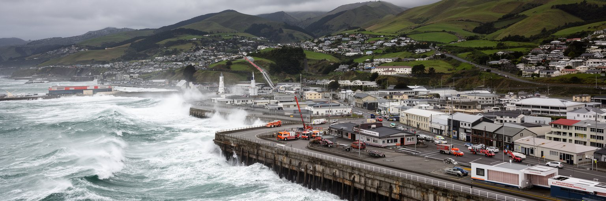
ウェリントンは風の強い首都として知られ、天候の変化は街の体感を大きく左右します。海峡を抜ける風は日常の会話、服装、歩き方、自転車、港湾作業、航空機の離着陸にまで影響します。さらにこの都市は活断層と海に近く、地震、津波、地すべり、液状化、インフラ寸断に備える必要があります。防災は非常時の訓練だけではなく、建物の耐震、岸壁の補強、水道と道路の代替、通信、避難経路、地域の助け合い、家庭備蓄を含む日常の設計です。中心部には官庁と企業が集まるため、大きな災害が起きれば、国家機能の継続も課題になります。海辺の埋立地は公共空間と業務地区を支えますが、揺れと水への備えを欠かせません。丘陵地では崖、擁壁、狭い道路、停電、孤立のリスクがあります。ウェリントンの防災文化は、恐怖を語るためではなく、美しい港町で暮らし続けるための現実的な知恵です。住民が近所を知り、学校や職場が連絡方法を確認し、都市が古いインフラを更新することで、災害時の被害は小さくできます。風景としての海と丘を愛するほど、その地形が持つ力に敬意を払う必要があります。強い風は、この街に備えを忘れさせない合図でもあります。水道管、道路橋、港の岸壁、携帯基地局のような見えにくい設備も、首都を止めないための命綱です。防災は景観の裏側で続く公共投資です。
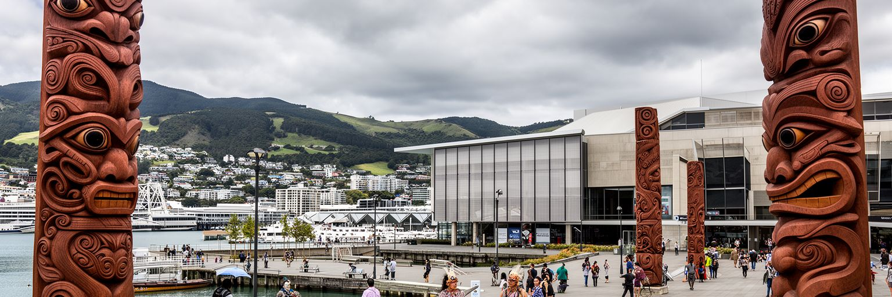
ウェリントンの文化を語るうえで、テ・パパ・トンガレワをはじめとする博物館、劇場、ギャラリー、図書館、マラエ、大学は重要です。テ・パパは自然史や芸術だけでなく、マオリのタオンガ、条約、移住、戦争、地震、太平洋世界の記憶を公共の場に置きます。展示は静かな鑑賞だけではなく、誰が歴史を語るのか、どの言語で説明するのか、奪われたものをどう扱うのかという議論を伴います。マオリ文化は観光の飾りではなく、土地、水、言語、教育、医療、政治参加と結びつく生きた制度です。ウェリントンでは政府機関と文化機関が近いため、文化政策と権利の問題が地理的にも近く見えます。教会や移民コミュニティ、太平洋諸島系の家族、アジア系の飲食店、学生の表現も、首都の文化を広げています。港沿いのイベント、音楽祭、映画祭、カフェの読書会は、政治都市の硬さをやわらげる日常の文化です。ウェリントンを文化都市として読むなら、展示品の美しさだけでなく、記憶を公共の議論へ開く力に注目する必要があります。文化は余暇ではなく、国家が自分の過去と現在をどう説明するかを試す場です。返還、共同管理、先住民の言語教育、太平洋諸島とのつながりは、展示室の外でも続く課題です。博物館を出た後の港の風景にも、誰の土地で誰が語るのかという問いが残ります。文化機関は、観光客だけでなく住民が何度も戻る学びの場でもあります。
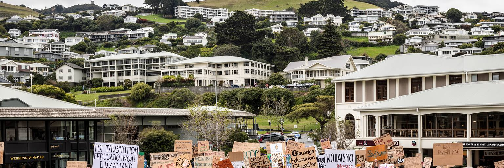
ウェリントンには大学、研究機関、芸術学校、公共機関、図書館、劇場、政策シンクタンクが集まり、若者に学びと実務を近い距離で見せます。学生は政治、法律、行政、映画、デザイン、音楽、環境、言語、国際関係を学びながら、カフェ、書店、ライブ会場、海辺の公共空間を日常の居場所にします。首都で学ぶ利点は、議会、官庁、文化機関、メディアへアクセスしやすいことです。一方で、家賃、食費、交通費、短時間労働、奨学金、メンタルヘルスは大きな負担になります。創造的な街のイメージがあっても、若者が安定した住まいと仕事を得られなければ、才能は他都市や海外へ流れます。留学生や移民背景の若者には、言語、就労資格、孤立、差別への対応も必要です。ウェリントンの若者文化は、政治参加、気候運動、音楽、演劇、映画制作、マオリと太平洋系の表現を通じて、都市の公共性を広げています。学びの街としての価値は、大学の数ではなく、若者が都市に意見を持ち、自分の将来を試せる環境にあります。小さな中心部は偶然の出会いを生みやすく、教室で学んだことが国会前の集会や港のイベントへつながります。若い声が聞こえることは、首都の健康を測る指標です。卒業後も残れる仕事、手頃な部屋、夜でも帰れる交通がそろえば、学びは都市の長い力になります。学外の実習やボランティアも、若者を地域へ結びます。
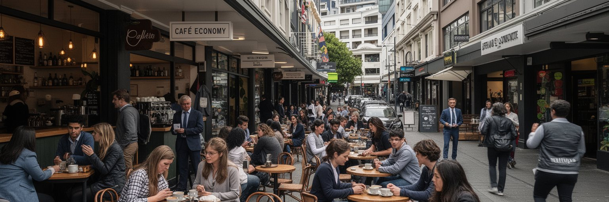
ウェリントンの中心部は、カフェ、バー、書店、ギャラリー、劇場、小さなオフィス、官庁、大学関係者が混ざる歩きやすい都市空間です。公共職員が昼休みにコーヒーを買い、映画関係者が打ち合わせをし、学生がアルバイトをし、観光客が港から商店街へ入ります。カフェ文化は街の魅力として語られますが、その裏には接客、調理、清掃、配送、家賃、仕入れ、電気代、賃金の現実があります。中心部の小規模店舗は、在宅勤務の増減、観光客の回復、公共機関の移転、物価上昇に敏感です。夜の経済は音楽や演劇を支えますが、治安、騒音、アルコール、深夜交通、働く人の安全も課題になります。ウェリントンの良さは、大都市の匿名性よりも、顔の見える距離で政治、文化、仕事、余暇が交わる点にあります。ただし中心部が高価になりすぎると、若い店主や表現者は残りにくくなります。日常経済を読むには、洗練されたコーヒーの味だけでなく、誰が朝早く店を開け、誰が食材を運び、誰が家賃を払い、誰が夜の帰宅に不安を感じるかを見る必要があります。小さな中心部の会話は、都市の変化をいち早く映します。カフェのにぎわいは、首都の社会的な温度計でもあります。昼の公務員客、夕方の学生、夜の観客が同じ通りを使うことで、中心部は一日を通して表情を変えます。空き店舗が増える時も、その変化は街の気分としてすぐ共有されます。
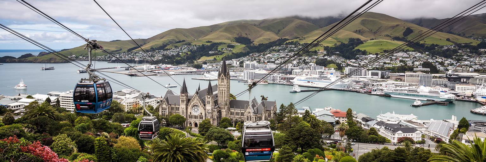
ウェリントン観光の魅力は、短い距離で港、国会、博物館、丘、映画文化、海辺の食を組み合わせられることです。旅行者はウォーターフロントを歩き、テ・パパで歴史と自然を学び、ケーブルカーで植物園へ上がり、国会地区を見て、ミラマーの映画文化や郊外の海岸へ足を伸ばします。中心部がコンパクトなため、車がなくても多くの場所を巡れる点は大きな強みです。一方で、観光が住民の生活空間を借りることも忘れてはいけません。港沿いの歩道、カフェ、バス、博物館、自然保護区は、旅行者だけの舞台ではなく、地元の人の通勤、散歩、学び、家族時間の場所です。強風や急な雨は旅程を変えますが、それもこの街の地形を体感する一部です。観光の質を高めるには、マオリ文化を敬意をもって伝える案内、公共交通の分かりやすさ、歩行者の安全、地域の店に利益が残る仕組み、自然保護への配慮が必要です。ウェリントンらしい旅は、派手なランドマークだけを追うのではなく、政治の中心が海辺の散歩道と隣り合い、映画の想像力が坂の住宅地とつながることを感じる時間です。港と丘を歩けば、首都の日常と観光が同じ風の中にあります。短い滞在でも、展示を見て、坂を上り、海を渡る船を眺めるだけで、島国の首都らしさが立体的に伝わります。天候で予定が変わっても、屋内文化と港の散策を組み替えられる柔軟さがあります。
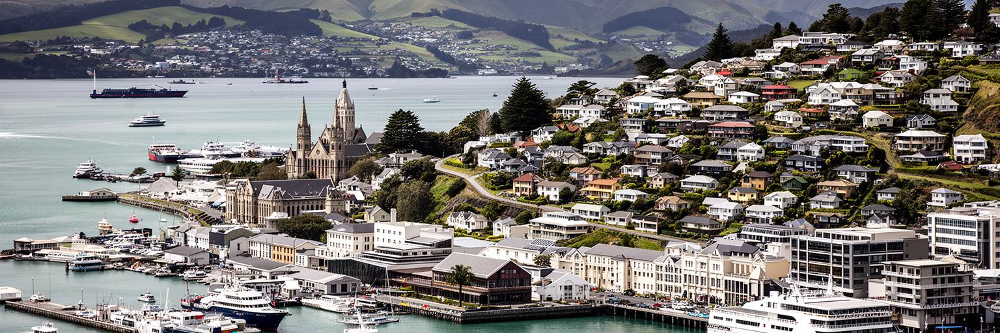
ウェリントンは人口規模では世界の巨大都市に及びません。それでも、首都を読むうえで重要な要素を高い密度で持っています。クック海峡の交通、地震と風への備え、条約政治、マオリの権利、公共行政、映画とデジタル産業、港湾、大学、カフェ文化、住宅費、観光が狭い入り江に重なります。最大都市ではない首都だからこそ、国家機能と日常生活の距離が近く、政策の結果が住民の移動、家賃、公共空間、文化施設に見えやすくなります。ウェリントンの世界性は、金融規模や人口の大きさではなく、太平洋国家が自分の歴史、先住民との関係、島国の物流、防災、創造産業をどう扱うかを示す点にあります。港のフェリーが動き、国会が議論し、学生が坂を上り、映画制作者が世界へ作品を出し、住民が強風の中で買い物をする日常は、別々の話ではありません。すべてが海峡の地形と首都の責任に結ばれています。ウェリントンを読むことは、小さな都市が大きな問いを引き受ける方法を見ることです。風の強い港町は、国家の約束、暮らしの公平さ、文化の創造力を毎日の距離で試しています。その近さが、この都市の静かな重要性です。世界都市を規模だけで見れば見落とす論点が、ここでは港、議場、博物館、坂道、カフェの間に現れます。小ささは限界であると同時に、都市を深く読む手がかりです。